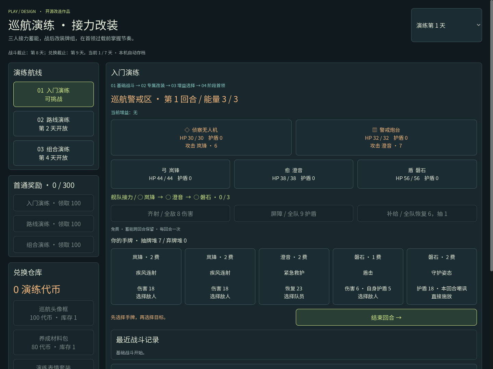

巡航演练 · 接力改装
选出你的三人舰队，用出牌顺序蓄满免费指令。战后打捞专属牌，决定强化谁；首领半血后切换攻击节奏，检验这局的构筑。
进入在线试玩 →下载离线版查看源码三人接力：不同队员轮流出牌，免费齐射、全队护盾或应急补给三选一，蓄能跨回合保留。
战后改装：十二种专属牌，每局三选一；替换两张基础牌，牌组保持十二张。
首领过载：半血后伤害增强、群攻节奏改变，新意图立即显示。

选出你的三人舰队，用出牌顺序蓄满免费指令。战后打捞专属牌，决定强化谁；首领半血后切换攻击节奏，检验这局的构筑。
进入在线试玩 →下载离线版查看源码三人接力：不同队员轮流出牌，免费齐射、全队护盾或应急补给三选一，蓄能跨回合保留。
战后改装：十二种专属牌，每局三选一；替换两张基础牌，牌组保持十二张。
首领过载：半血后伤害增强、群攻节奏改变，新意图立即显示。
